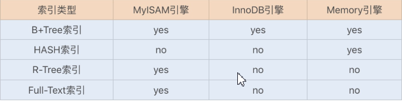
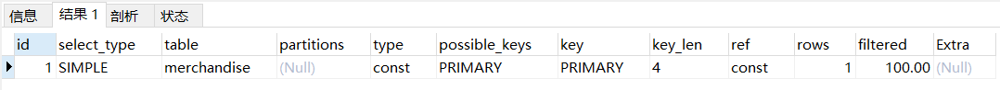
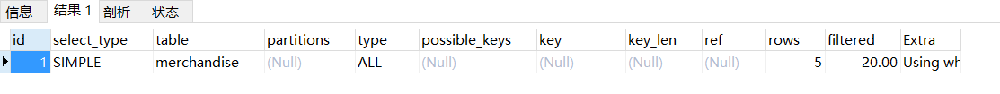
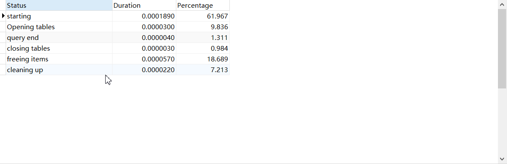
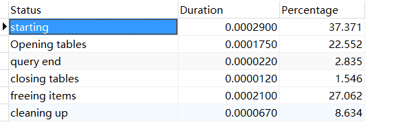

数据库索引
索引真的是绕不开的话题,今天开这个博客不是扫盲,而是说一点深入的东西.
底层结构
有这样一张图

是各个数据库引擎支持的索引类型,这里说一下Hash索引和B+Tree索引,剩下的自行了解,Hash索引比较简单,就是一个hash表,任何数据的查询都是O(1),但是只适合
=的查询.然后就是B+ Tree索引,老生常谈了,至于为什么使用B+树不用B树,什么的面试题我就不说了.
InnoDb
当我们创建一个表的时候,如果不指定主键,是无法创建表的,因为数据库需要默认创建一个主键索引,而此时该表的存储结构也就不是简单的一行一行了,而是转变成树状结构存储,因为这样,叶子节点存储的就是行数据,所以主键索引也被称为聚集索引.
然后就是非聚集索引,也就是非主键索引,同样是采用B+树作为索引的数据结构,我们通常使用非主键建立索引,此时我们不可能再把保存的数据树形重新构造,而不可能取复制一份完全相同的数据,所以此时叶子节点保存的就是主键的值,所以当我们通过非主键索引查询值的时候,会先定位到主键,然后通过主键索引寻找到对应的数据行.
但事情又不全是这样,有一种覆盖索引,是这样,假定一个查询语句,select name from students where sno = '1627406006';
而我们的主键不是sno,而是一个id,我们创建sno的索引.create index sno_index on students(sno);
此时我们的查询就是先通过sno在辅助索引中找到对应的id值,然后再到主键索引中找到对应的数据行,再返回name.
覆盖索引是什么呢?是这样的一种联合索引create index full_index on students(sno,name);
也就是我们辅助索引处就有name的值,当通过sno找到对应的叶子节点时,就直接拿到name返回了,这也少了再次查询主键索引的时间.
MyISAM
类似的,MyISAM也会默认创建主键索引,但是这个主键索引却有点不同,它的叶子节点保存的并不是行数据,而是行数据的物理地址,而MyISAM的主键索引和辅助索引没有什么区别,都被称为非聚集索引,只不过主键索引要求键唯一,辅助索引没有这个要求
执行计划
这是比较重要的一点吧,不能什么都是理论,何况谁又能确定别人说的就是对的,总得自己去试试看,这就得通过执行计划来看.
使用方法 : 在查询语句前添加 EXPLAIN 即可 .
返回的结果又很多参数,我就不复制过来了,看这里.我们来实地操作一下:
建表语句:
InnoDb引擎,数据库sys
CREATE TABLE `merchandise` (
`id` int(11) NOT NULL,
`serial_no` varchar(20) DEFAULT NULL,
`name` varchar(255) DEFAULT NULL,
`unit_price` decimal(10, 2) DEFAULT NULL,
PRIMARY KEY (`id`) USING BTREE
) CHARACTER SET = utf8 COLLATE = utf8_general_ci ROW_FORMAT = Dynamic;
插入数据:
insert into sys.merchandise values(5,'000124','商品1',1000.00);
insert into sys.merchandise values(7,'000159','商品2',2000.00);
insert into sys.merchandise values(8,'000246','商品3',400.00);
insert into sys.merchandise values(11,'000255','商品4',900.00);
insert into sys.merchandise values(14,'000298','商品5',1000.00);我们先检查一个主键索引的存在,随便一个查询语句:EXPLAIN select * from merchandise where id= 7 ;
然后看结果:

可以从key的值看出
PRIMARY,使用了主键索引.type的值是const,代表使用了主键索引或者唯一索引,且匹配的结果只有一条记录;接着我们使用用这个语句:
EXPLAIN select * from merchandise where name='商品1' ;然后看结果:

可以看到并没有使用主键索引,这也是当然的.而且是全表扫描
上面有点zz,下面我们验证一下覆盖索引;
首先创建普通的对name的索引 :create index name_index on sys.merchandise(name);
然后查询一下:EXPLAIN select serial_no from merchandise where name='商品1' ;
看一下运行时间:

然后我们删除索引,重新创建覆盖索引,再查询
drop index name_index on sys.merchandise;
create index name_index on sys.merchandise(name,serial_no);
EXPLAIN select serial_no from merchandise where name='商品1' ;再看运行时间

这里有一点需要注意,当我们创建联合索引的时候,要注意字段的顺序,比如上面的name,serial_no,我们查询的条件是name,那么name就在前面,如果serial_no在前面,就无法使用到索引,这有一个联合索引的生效规则.可以自行了解.
这下验证了,当然还有很多sql的优化,我们都可以类似验证,如果有好玩的,我再补充.